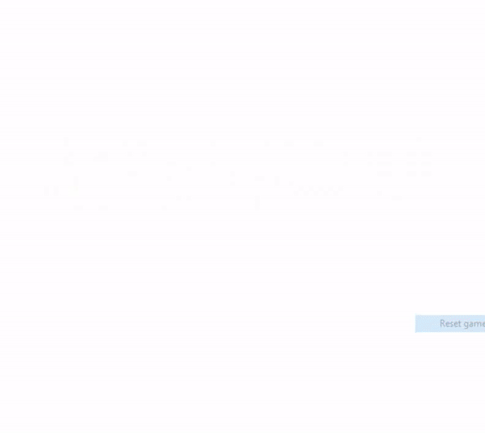

We all know and love the sweet 'ding' sound of the GameBoy as the nintendo logo flies in from the
top of the screen or the colorful wiggle of the GameBoy color. But even this isn't sacred to us hackers.
Today we are talking about editing the boot screen of the GameBoy to make it say anything you like! Well.. kinda?
This project was inspired by dodslaser's blog post.
Explain about how the cartridge header affects the boot logo. (Double check for logo).
Explain to decode the header information.
Download here bootlogodecode.py
from itertools import chain
from PIL import Image
bytes_raw = bytes.fromhex(
'ce ed 66 66 cc 0d 00 0b 03 73 00 83' \
'00 0c 00 0d 00 08 11 1f 88 89 00 0e' \
'dc cc 6e e6 dd dd d9 99 bb bb 67 63' \
'6e 0e ec cc dd dc 99 9f bb b9 33 3e'
)
# Split bytes into separate bytes for upper and lower nibbles
logo_nibs = b''.join(
bytes([b >> 4, b & 15]) for b in bytes_raw
)
# The mapping can be generated as a chain of ranges
mapping = chain.from_iterable(
range(x+y, 48+y, 4) for y in (0, 48) for x in range(4)
)
# Sort the nibbles according to the mapping
sorted_nibs = [logo_nibs[x] for x in mapping]
# Recombine the nibbles into a 48-byte string
logo_out = bytes(
(sorted_nibs[n] << 4) | sorted_nibs[n+1] for n in range(0, 96, 2)
)
Image.frombytes('1', (48, 8), logo_out).save('logo.bmp')
Explain hot to encode the header information.
Download here bootlogoencode.py
from itertools import chain
from PIL import Image
logo_raw = Image.open('mylogo.bmp').tobytes()
logo_nibbs = b''.join(
bytes([b >> 4, b & 15]) for b in logo_raw
)
mapping = chain.from_iterable(
range(x+y, 48+y, 4) for y in (0, 48) for x in range(4)
)
# The mapping has to be converted to a list since a chain doesn't have an index
mapping = list(mapping)
# The sorting is reversed by looking at the index of each nibble in the mapping
sorted_nibbs = [logo_nibbs[mapping.index(x)] for x in range(96)]
logo_bytes = bytes(
(sorted_nibbs[n] << 4) | sorted_nibbs[n+1] for n in range(0, 96, 2)
)
# The logo bytes are padded with zeroes to fill out the header
bytes_out = b'\x00'*260 + logo_bytes + b'\x00'*28
with open('mylogo.gb', 'wb') as f:
f.write(bytes_out)
Explain that you can't actually boot a game after this as the security check still fails.
Here are a couple of samples of boot logos we generated:

All the code mentioned in this project is available on GitHub or downloadable below:
Decode the boot logo bootlogodecode.py
Encode a boot logo bootlogoencode.py